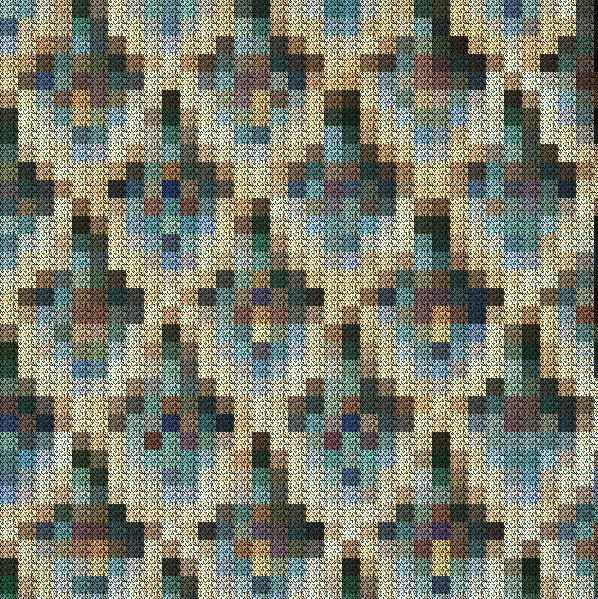
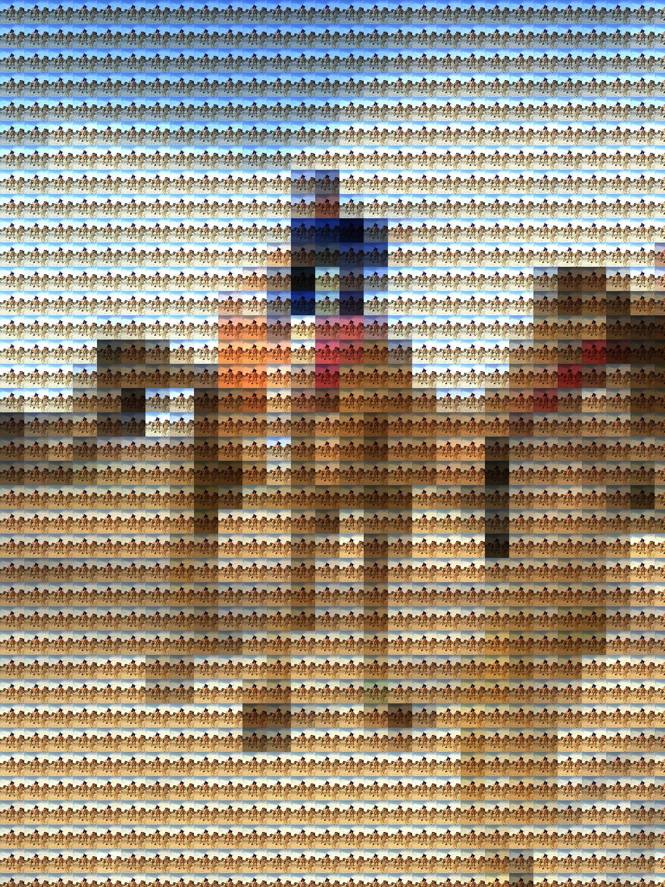
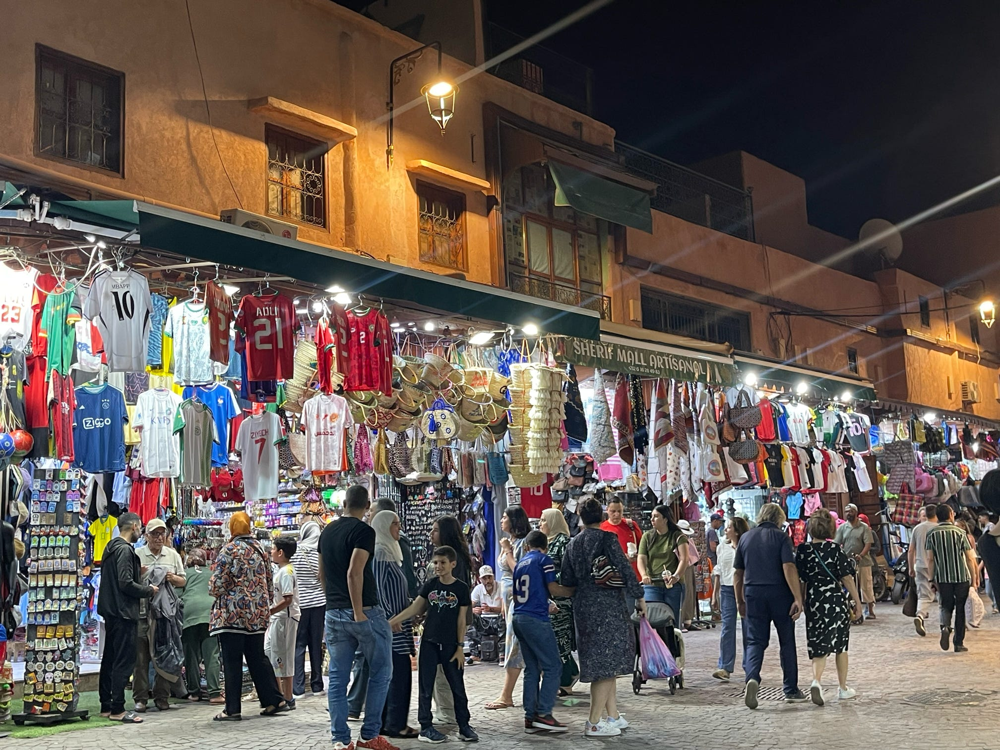
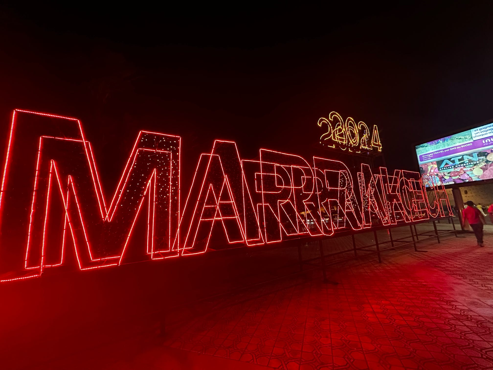
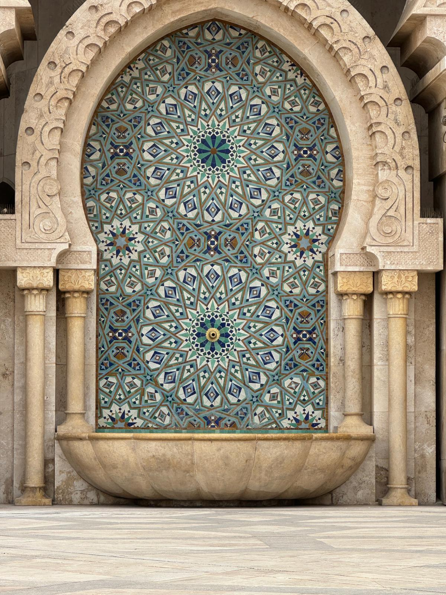
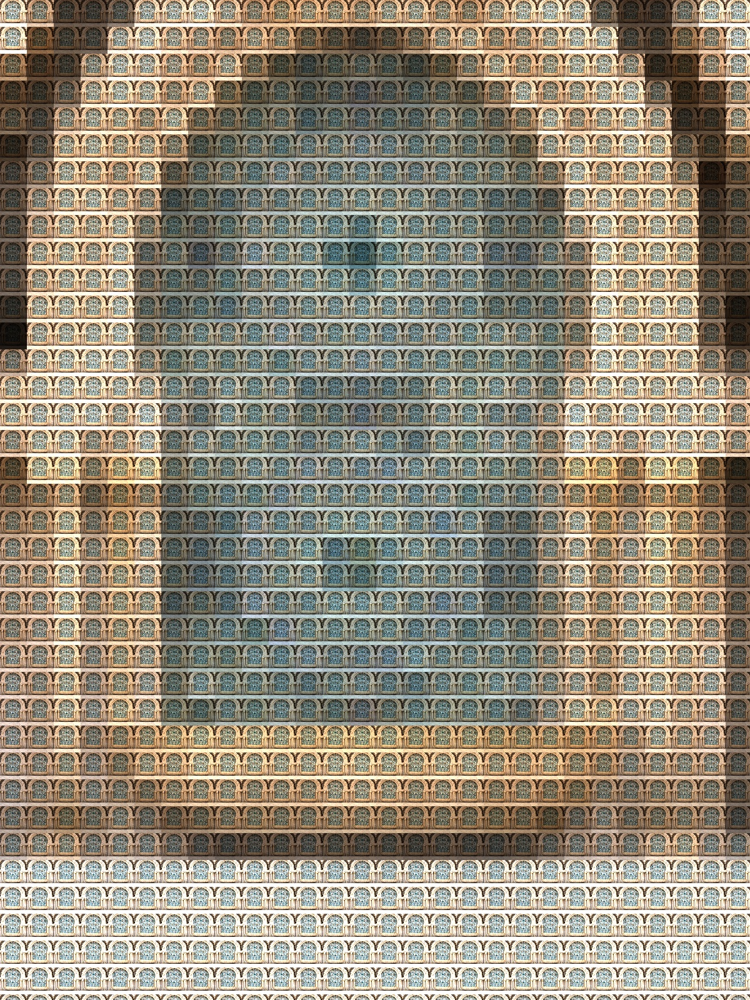
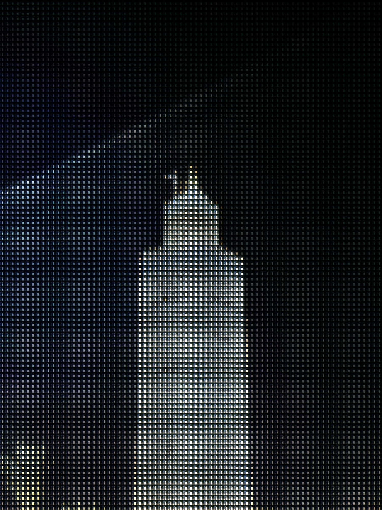

CS4475 Computational Photography Project 1 | Team Ducks
High-Level Overview of the Algorithm
Our algorithm will take an input image, and make a mosaic of the image by taking smaller versions of the input image to use as tiles, and shading each tile the average color of the section of the original image that the tile fills. Note: these images are at reduced resolution for web use.










